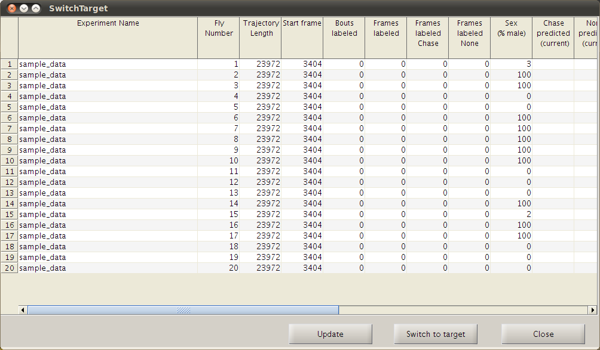
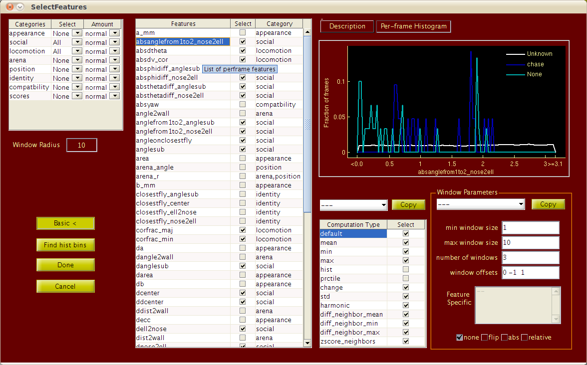
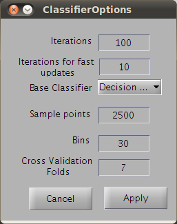

JAABA - Janelia Automatic Animal Behavior Annotator
INSTALLATION
Install the Matlab Compiler Runtime (MCR) for R2012a. MCR installers and the instructions are available at Mathworks website.
STARTING UP
On Windows: Run the executable JAABA_win.exe
On MAC: Run run_JAABA_mac.command file.
On Linux: Run the run_JAABA_linux.sh file from the command line in a terminal. You need to give the path to installed MCR as the argument.
Select Project and Load Experiments
Select the project in the Project and Experiment Selection interface. In the demo version, "FlyBowl_Chase" project should be selected. This project is used to train a Chase detector. After selecting the project, you add movies/experiments to view and annotate. Using the Add.. button at the bottom browse to the movie directory and add it. Once you add the example directory click Done.

NAVIGATION
After you click Done, the main JAABA window will appear which will allow you to label and train the behavior detector.

The animal that is selected for annotation is highlighted by a thicker outline. For the selected animal, we also plot the locations for the next 20 past and future frames.
Left and Right arrow keys let you navigate forward or backward by a single frame. Down and Up arrow keys move forward and backward by 30 frames. The scroll-bar below the movie previewer can also be used to move back and forth in time. Clicking on the annotation timelines near the bottom of the window will move to the clicked location. Play button below the movie previewer plays the movie.
CHANGING ANIMALS and EXPERIMENTS
You can switch animals that is being annotated by double clicking on the animal's outline. Animals can also be switched by Go -> Switch Target. Switch Target brings up a table that gives detailed information about the labels and the predictions for the animals. To switch animal, select any cell in the row of that animal and click "Switch to Target".

VIEWING OPTIONS
Zoom-in, Zoom-out, and pan buttons are above the movie previewer. While playing the movie, to keep animal always at the center use View -> Zoom -> Center axes on current target. View -> Zoom -> Keep target in view does not move the axes unless the animal moves outside the preview window, in which case it moves the axes to keep the animal in the view. View -> Zoom -> Static View does not move the axes even if the animal goes outside the preview window.
LABELING
To label frames as chase, click the chase (or the behavior) button to put the labeling pen down, and then navigate forward or backward in time. All the frames between the current frame and theframe where you put the pen down are labeled once you lift up the pen. To lift the pen, click on chase button again. You can label none's to label trajectories that are not chase. To erase labels, You can use unknown button.

You can also use keyboard shortcuts for labeling. The shortcuts can be assigned using Edit -> Label Shortcuts... We usually assign z, x and c keys for labeling chase, not-chase and unknown.
TRAINING and REVIEWING
Once you have labeled few bouts of both chase and none (i.e., not chase), you can train a classifier by using the Train button. To see the classifier's predictions on frames without predictions, use the Predict button. If you play the movie, the JAABA will predict the behavior for frames as they appear.

The classifier's predictions are shown on the automatic timeline which has four parts. The top part shows the prediction for a frame while the top-middle part shows the classifier's score. Classifier's score can roughly corresponds to classifier's confidence. Dark colors close to black indicate low confidence, while brighter colors indicate high confidence. The two bottom parts can show predictions and scores of the previous classifier. They can also be used to show the predictions and scores that the frames got during cross-validation or saved scores.
To both train and predict, for each frame we compute an extensive set of feature values. The number of feature values for each frame can be in thousands. Computing the feature values takes time and it also requires a lot of memory, so we compute them as and when necessary, but once computed we try to store them as long as possible until the memory used to store them hits a limit. Typically, window features are computed for frames that are around frames that have labels or for the frames on which user wanted to look at the predictions.
RETRAINING
As you review the predictions, you can label frames that are incorrectly predicted to add these frames to the training set. It's likely that the classifier's predictions are wrong on these frames because there were no or very few such frames in the training set. And adding such frames to the training set improves the classifier's prediction on similar frames. Once you add new labels, you can retrain the classifier by clicking Train again.
After retraining, the scores from the previous classifier classifier are shown at the bottom of the automatic timeline (old in the drop down menu).
VISUALIZE CLASSIFIER
To take a look at the features and the thresholds being used by the current classifier, you can use Classifier -> Visualize Classifier . An example output is shown below
The window features are shown in the decreseasing order of the the total weight that is assigned by boosting. The naming convention for window feature name (e.g. dnose2tail_mean_none_radius10_offset0) is perframe feature (dnose2tail) followed by window computation (mean), transformation type (none), window radius (radius 10) and the window offset (offset0). The plot on the left shows the weight assigned and the middle plot shows where the threshold (closest to the 10th percentile) selected by boosting lies.
SELECTING FEATURES

To select the per-frame features and their corresponding window computations, you can use the Select Features interface that can be accessed by Classifier -> Select Features . In the basic mode, you can select perframe features by broad categories such as "appearance" or "social" and select one of three default amountsof window computations (normal, less or more). To select a particular category, select All from the drop down menu in the second column. Selecting None deselects all the perframe features from that category. Selection is set to Custom if anything was modified in the Advanced mode. Most often, we use normal feature computations.

The Window Size is roughly the radius of the window in which would capture the context to detect behavior. If you select normal window computations, then window features are computed in windows of radius 1, half the window size and window size.
Individual perframe features can be selected and their window feature parameters can be modified in the Advanced mode which can be accessed by the Advanced mode button. You can save the window features in to an xml file using the Save as.. button. And a saved configuration file can be loaded using the Load ... button. After setting the parameters you can click Done to apply the changes and close or Cancel to discard the changes. If you click Done, then all the features are recomputed to update the changes you made.
If you selected hist (histogram) window features for any of the perframe features, you can compute the bin edges that should be used to compute the histogram using the Find hist bins button. This places the histogram bin edges at 5,15,30,50,70,85 and 95 percentile of the perframe data for all the perframe features that have histogram window computation selected. To calculate the percentile, we use the per-frame data over all the animals and all the experiments that are currently loaded.
ADVANCED NAVIGATION
To navigate the movie in ways other than simply moving forward and backward in time, you can use left and right arrow keys with Control (or Command on mac) and Shift modifier keys. Control (or Command) modifier keys takes you to the start of the next manually labeled bouts or the end of the previous labeled bouts. Shift lets you navigate in multiple ways which you can select using the Go -> Navigation Preferences . Bouts in current scores will take you beginning and end of bouts in the predictions, Errors in current scores takes you to beginnings and ends of bouts of errors i.e., frames where the predictions do not match the labels, Errors in validated scores takes you to validation errors, Low Confidence takes you to bouts of low confidence predictions. One of the most useful one, Thresholds on perframe where you select a perframe feature and set a threshold and then navigate to frames where the perframe features is either low or high.
In the Navigation Preferences you can select how many frames are jumped when using the up and down arrow keys(N. frames jump). Also, you can select which bouts to jump to using the Shift and Control modifier keys. For example, if you select only chase in Seek to next/previous then Control will jump only to starts and ends of bouts of chase.

CROSS VALIDATION
To do cross-validation, you can use Classifier -> Cross Validate. Cross-validation is done over bouts i.e., either the whole labeled bout will be part of training or held out. The detailed error rates from cross-validation are shown in a table. The scores that the labeled frames get during cross-validation are also displayed at the bottom of the scores timeline.
CLASSIFIER PARAMETERS
The number of iterations, number of folds for cross-validation can be set using Classifier -> Classifier parameters .

SAVING LABELS and CLASSIFIER
The labels can be saved by using File -> Save Labels. The saved labels are automatically loaded in when the experiment is added later for the same project. If you add the same experiment, but select a different project, "chase" labels are not added.
Similarly, File -> Save classifier and labels will save the current classifier and labels. A saved classifier can be loaded using the Load button when starting a new JAABA session. When you load a classifier, the associated movies/experiments are added automatically.
CLASSIFYING MOVIE
After training a classifier the whole trajectory of a animal, whole movie or all the movies can be classified by Classifier -> Classify. Current animal computes the predictions for whole trajectory of the current animal. Current Experiment computes the predictions for all the animals in the current experiment but in addition stores them to disk. The scores computed using this are shown at the bottom of the prediction timeline (the Loaded option in the drop down menu). Same is the case with All Experiments.
Saved scores can be loaded using File -> Load Scores -> For current experiment from default location or For all experiments from default location later again or in a new session of JAABA.
ADDING/REMOVING EXPERIMENTS
You can add/remove experiments by File -> Edit files...